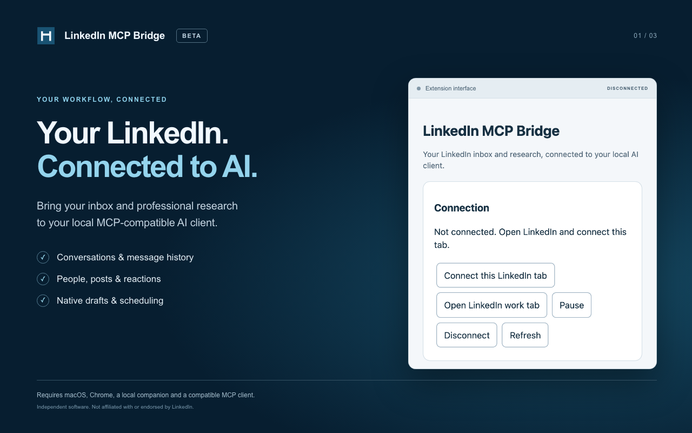
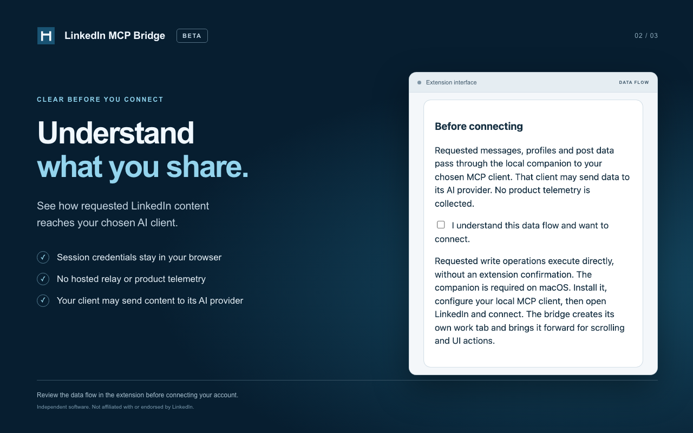
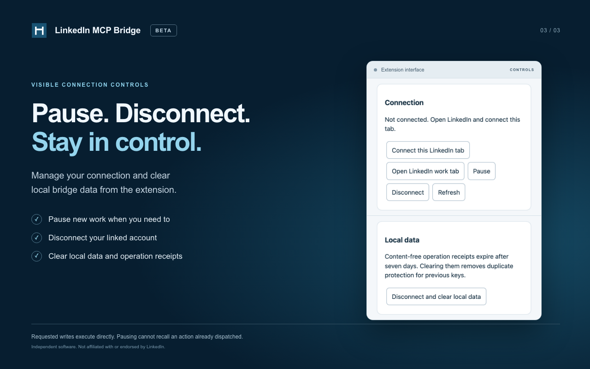

LinkedIn MCP Bridge — Store graphics
English · Five upload-ready graphics · Existing 128px extension icon
Marquee · 1400 × 560
Small promo · 440 × 280 & existing icon · 128 × 128
01-connect · 1280 × 800

02-data-flow · 1280 × 800

03-controls · 1280 × 800

UI captures render the actual extension markup and styles with the documented disconnected state. No live user data.